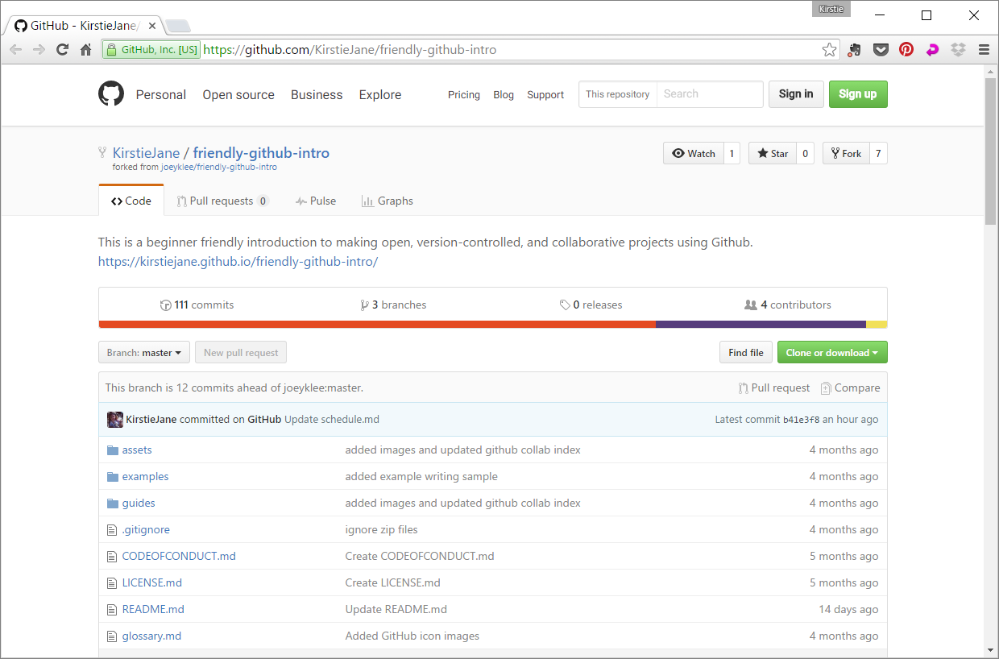
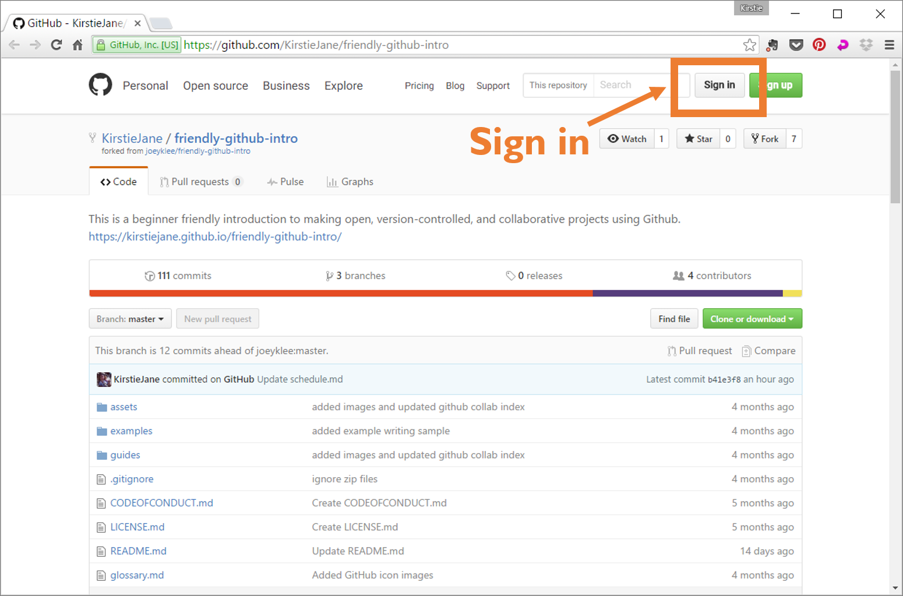
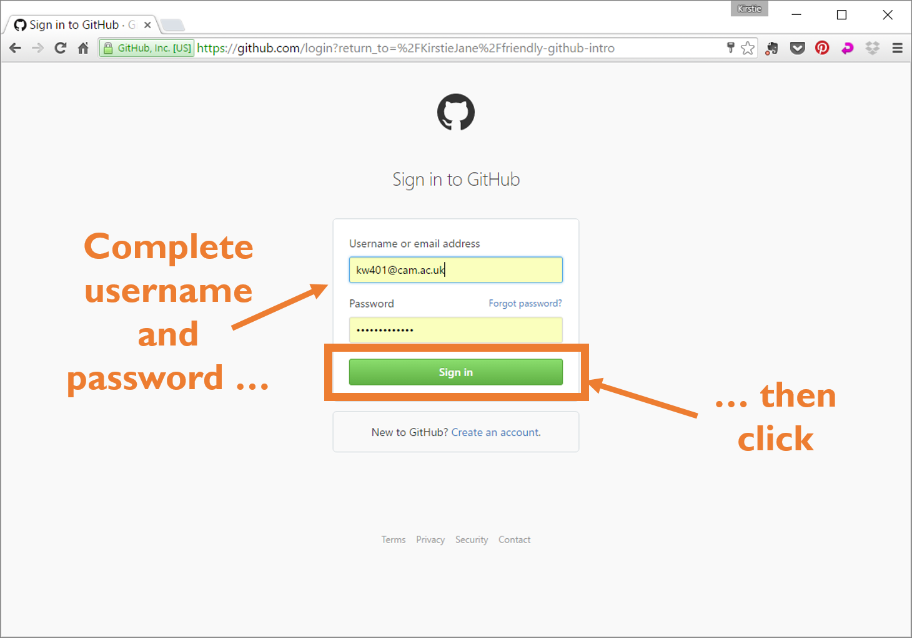
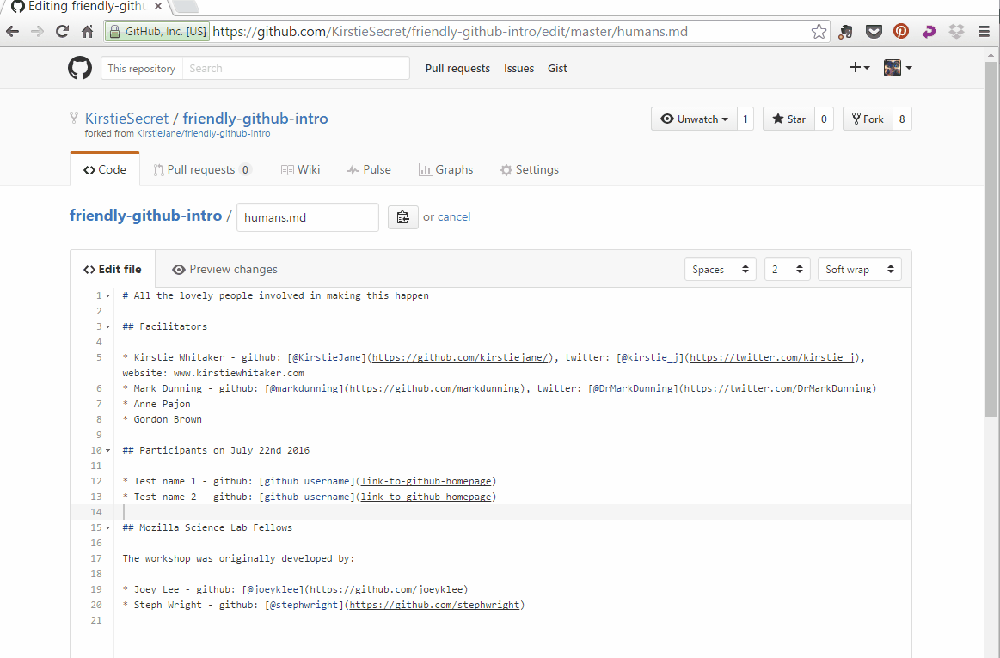

My first pull request
Format
This is designed as an in-person, facilitated workshop with pairs of learners working together.
Target Audience
People new to Git/GitHub looking for some practice with the workflow.
Materials
- An Internet connection to access the GitHub site
Introduction
GitHub is a web-based interface for version control, a way of keeping track of changes made to a collection of working documents. GitHub provides a structure and space for communicating about collaborative work on open projects.
This exercise walks you through adding your very first contribution to an open source collaborative project using Git/Github through the GitHub web interface.
The Brief
You're going to add a sentence to a file in your partner's repository. It doesn't matter what you say! You can add anything you want.
You'll have to fork the repo, make a change to the file, commit it to your fork, and then make a pull request to ask your partner to merge the edit.
Then switch roles and repeat! The contributor becomes the project owner and vice versa.
If you have time, make an issue in your own repository suggesting a change that someone else could make and add a link as a comment to the participant issue list issue in the friendly-github-intro workshop repository. Then, either sit back and wait for someone to make that change for you, or go and see if you can help someone else move their project along.
My first pull request: Step by step
-
Find the repo
In the screenshots we're going to follow Kirstie making changes to the friendly-github-intro repository. You'll want to go to your partner's repository link and edit one of the files there (probably the README.md file).
 -
Sign in
Log into your github account.
  -
Fork the Repo
Make a copy of the repository all of your own.


-
Find & open the file you want to edit
In the example below, Kirstie is going to add her name to the humans.md file.
You'll want to make whatever change you want to in your fork of your partner's repository.


HEADS UP: Common mistake!
If you see the error below, you're trying to edit the original version of the repository, not your own fork! Go back to your home page by clicking on your avatar in the top right corner, click on your profiles, and you should see your own fork of the repository there!

-
Make a change & save the commit
Change some of the information in the file. You might find this handy markdown guide helpful.

-
Make a pull request
Now you're ready to ask the project owner to merge in your changes. Click on the Pull Request tab and then on New Pull Request.


-
Wait for your pull request to be merged
Keep an eye on your notifications to see if the project owner has any questions.
If you've made a mistake, you might be asked to make further changes (but hopefully not!)
If all goes well, CONGRATULATIONS! You've just made your first pull request and worked collaboratively on GitHub!
Stretch goal: Pull requests for other projects
Try asking other members of the workshop to help you. Create a new issue and add a link to the participant issue list issue in the friendly-github-intro workshop repository. Then, while you wait for another participant to help you fix the issue, take a look to see if there are any you can help with.
Use the social features of GitHub as much as you can. If the issue isn't clear, ask for clarification. Be polite and as clear as possible whether you're the project owner or the contributor.
Remember that to make a contribution to someone else's project you'll have to fork their repository so you have your own copy.
Glossary
repository, or repo
a collection of documents related to your project, in which you create and save new code or content.
markdown
a lightweight way of annotating a document with instructions that tell a web browser how to format and display text.
version control
a way of tracking changes to a document or collection of documents. Version control is like a time machine, it can take you back to the moment your document was created, or any other point in time when you or a collaborator saved that document.
Git
the command-line software that tracks all changes to a collection of documents
GitHub
a service that hosts your repository online and helps you work with contributors. GitHub adds a web-based interface to version control.
fork
a copy of a repository that is saved in another user's GitHub account.
branch
a copy of a repo that is contained within the orignal repo. Branches are used to work on a project features without altering the original or "master" repo.
commit
a saved change to a document in a repository.
issue
a message on gitHub that outlines a task that needs to be completed.
pull request
a request to add a commit or collection of commits to a repository.
merge
the act of incorporating new changes (commits) into a repository.